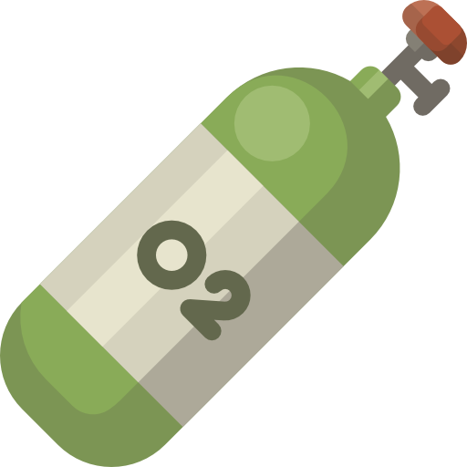
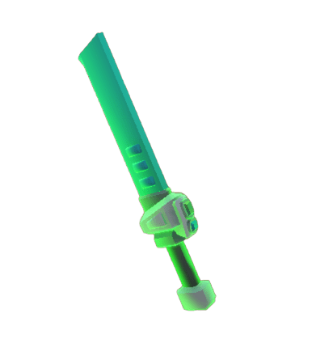
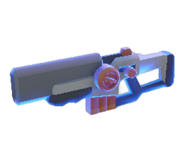
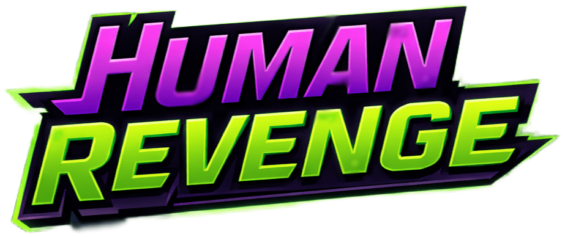
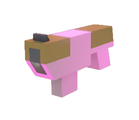
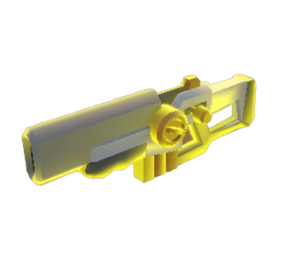

◆Guerra de atmósferas
Tu oxígeno te protege y recarga. El gas morado alienígena te ralentiza, te quita munición y vida.




Escolta la torre de oxígeno por un planeta alienígena y conviértelo, oleada tras oleada, en un lugar donde la humanidad pueda respirar.
Un shooter de doble stick en modo infinito: la torre recorre 5 puntos de control en forma de estrella y en cada tramo pide una cuota de muestras alienígenas que se consiguen al eliminar enemigos. Si no se cumple a tiempo, fin de la partida.
Los disparos no hacen daño fijo: el oxígeno se filtra en los trajes y daña poco a poco. Cada bala deja un rastro de gas, como la tinta de Splatoon, que recarga tu munición y debilita al enemigo.
Tu oxígeno te protege y recarga. El gas morado alienígena te ralentiza, te quita munición y vida.
La cuota crece x1.5 por oleada. Con un 25% de probabilidad llega una oleada oscura con zombis y muestras dobles.
Mini-bosses, entregas express y habilidades como el dash o la granada de oxígeno para arriesgar a cambio de más muestras.
El corazón del juego es un sistema de territorios inspirado en la tinta de la saga Splatoon, programado desde cero. Cada disparo, dash o granada "fumiga" casillas del suelo con el gas de su bando, y el mapa se convierte en una disputa constante entre el oxígeno humano y el gas tóxico alienígena.
El suelo se divide en casillas con dueño y tiempo de vida. Cada arma pinta un número distinto de casillas y el gas se disipa pasados unos segundos si nadie lo renueva.
En tu oxígeno recargas munición, cortas el daño progresivo y el dash se recarga antes. En el gas enemigo pierdes velocidad, munición y vida, y a los aliens les pasa igual en el tuyo.
La torre mantiene siempre un área de oxígeno a su alrededor, que acompaña su recorrido por el mapa y convierte cada punto de control en una zona segura que defender.
Ráfagas rápidas que impactan directamente en el primer alien que encuentran.
Daño 10 · Cadencia 0.2 s

Proyectiles que caen unos metros por delante y explotan en área.
Daño 20 · Cadencia 0.5 s

Carga y lanza un rayo de largo alcance que atraviesa a todos los enemigos.
Daño 125 · Cadencia 4 s
El arma cuerpo a cuerpo: golpes rápidos en área delante del jugador.
Daño 20 · Cadencia 0.2 s
En un futuro lejano, la humanidad devuelve el golpe: años atrás los alienígenas intentaron conquistar la Tierra, y ahora un comando humano lanza un ataque sorpresa sobre su planeta.
El plan es instalar una torre que expulsa oxígeno, mortal para los alienígenas igual que su aire lo es para nosotros. La torre avanza por puntos de control creando micro-atmósferas hasta que el planeta sea habitable… pero el enemigo no se lo pondrá nada fácil.